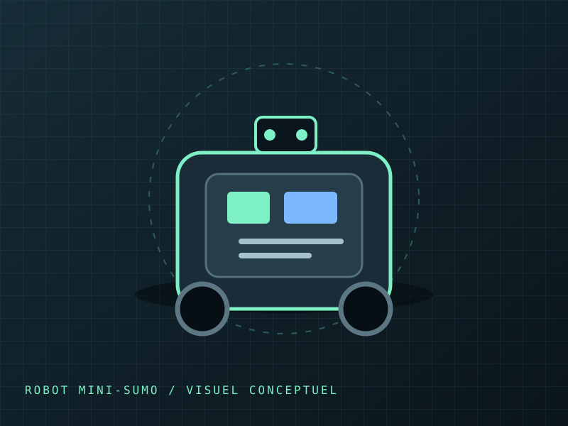

SAE · BUT 2 · SEMESTRE 3
Robot mini-sumo
Conception du circuit imprimé sous KiCad, fabrication de la carte et étude énergétique dans le cadre d’un projet de robot mini-sumo.

01 — Contexte et besoin
Projet mini-sumo réalisé en SAE de BUT 2 GEII. Le projet mobilise la conception électronique d’un robot autonome. Cette fiche documente la partie que tu as décrite ; les autres tâches seront ajoutées lorsque tu les préciseras.
À compléter : contraintes du cahier des charges, fonctions attendues et critères de réussite.
02 — Ma contribution
- J’ai réalisé la conception du circuit imprimé de bout en bout sous KiCad.
- J’ai percé la carte électronique.
- J’ai accompagné un camarade pendant le soudage des composants sur le PCB.
- J’ai réalisé l’étude liée à l’énergie pour le projet.
- Contribution au DDC (dossier de conception) sur la partie énergie.
- Contribution au DDC (dossier de conception), sur la partie énergie.
La conception KiCad et le perçage sont mes réalisations directes. Le soudage a été effectué par un camarade que j’ai aidé.
Les autres parties du projet seront complétées ultérieurement.
03 — Démarche technique
- Concevoir le PCB sous KiCad, de la mise en place du circuit à la carte finale.
- Préparer puis percer le circuit imprimé.
- Assister un camarade lors du soudage des composants.
- Étudier la partie énergétique du robot.
Les choix de conception, les paramètres de fabrication et le contenu détaillé de l’étude énergétique pourront être précisés avec les preuves du projet.
04 — Preuves du projet
05 — Compétences mobilisées
Concevoir un circuit imprimé sous KiCad et mener une étude énergétique appliquée au robot.
Passer de la conception à une carte physique en réalisant le perçage, puis contribuer à l’assemblage en accompagnant le soudage.
06 — Bilan personnel
À compléter plus tard avec les choix de conception du PCB, les difficultés rencontrées et les enseignements tirés de l’étude énergétique et de la fabrication.